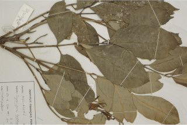
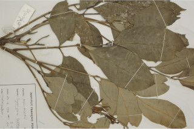

Images :
 


| Habit : | Large trees , up to 30 m tall. |
| Leaves : | Leaves compound , imparipinnate , to 30 cm long, alternate , spiral , pulvinate ; rachis angular , pubescent ; petiolue ca. 0.8 cm long; leaflets 7-9 pairs, alternate , 10-15 x 4-5.5 cm, oblong , apex acuminate with blunt tip, base acute and asymmetric , margin entire , glabrous ; midrib slightly raised above; secondary_nerves 12-20 pairs, not prominent; tertiary_nerves obscure . |
| Inflorescence / Flower : | Inflorescence short axillary racemes or panicles ; flowers greenish yellow, subsessile . |
| Fruit and Seed : | Capsule ovoid , apiculate , 7 x 5 cm, with shallow vertical ridges, yellow; seeds 2-4, covered with orange-yellow aril . |